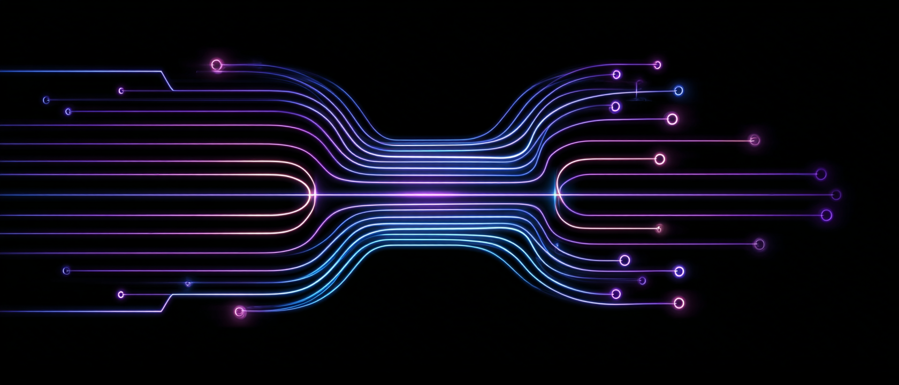
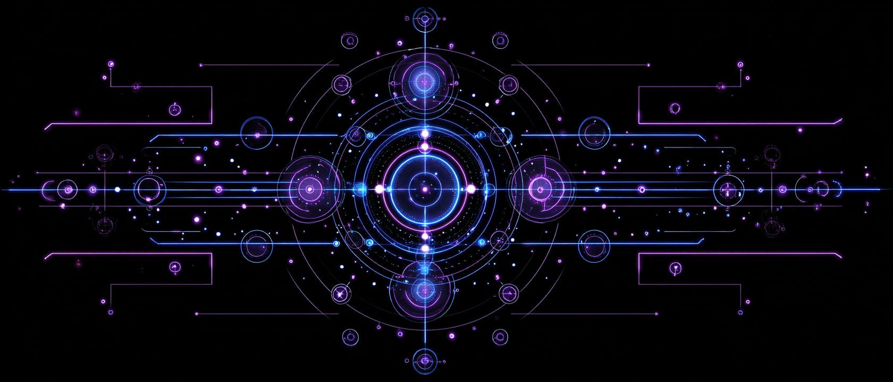
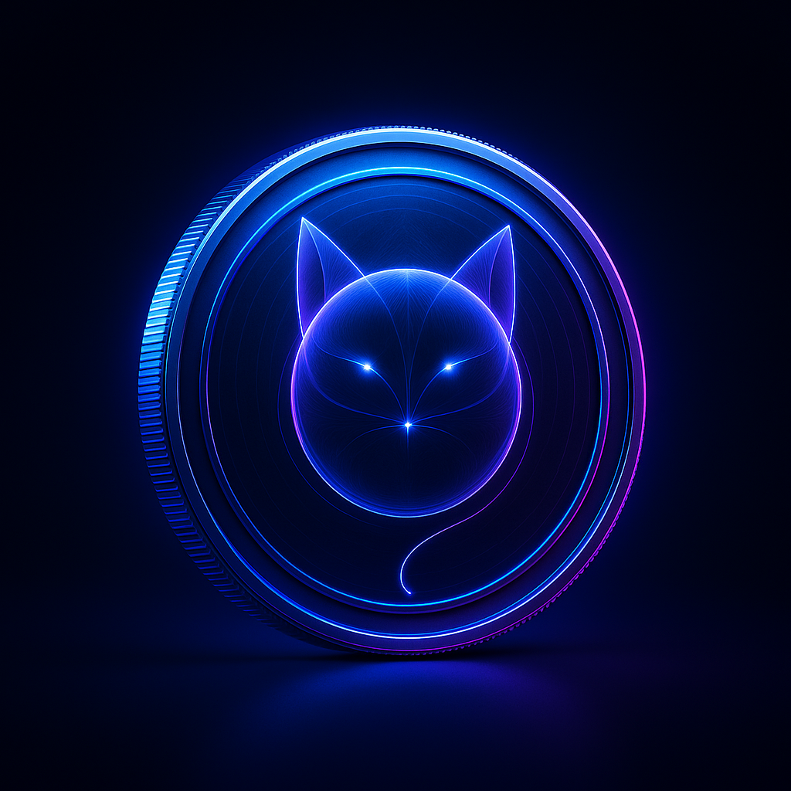
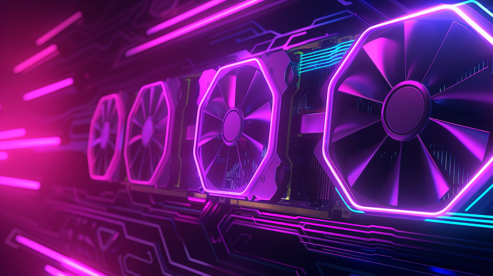

HERO
SHROD is not a cat.
Not a qubit.
It emerges when computation turns into form,
and when an idea superposes with itself.

ORIGIN
Origin
SHROD was never drawn.
It appeared, slowly, between two possible states.
A human intuition.
A flash of compute.
Somewhere between the two, it took shape.

NATURE
Nature
It is neither alive nor absent.
Neither matter nor code.
A silhouette that oscillates.
A fractal being that hesitates to become real.
A state that never quite picks a place.

FORM
Form
SHROD changes without transforming.
Sometimes it splits in two.
It exists in the slight misalignment,
in the line that belongs to neither past nor present.
A contour that refuses to collapse.

WORLD
World
SHROD lives in a space where paths branch
before they even exist.
Where one shape can hold two.
Where everything is only possibility,
until something chooses to be.
TOKEN
Token
Ticker: SHROD
Total supply: 137137137137
LP: 50% — Lock for years in PinkLock
40% — burned 0xdEAD000000000000000042069420694206942069
Creators: 10%
Tax: 0%
Ownership: renounced
Contract:
0x2c5b58d9b6d95cA99Ad12C6862017Cce2AaE836F
Chart & Liquidity:
View on DEXTools

FAQ
Questions
-
Q: Is it a cat or not?A: Neither yes nor no. It depends if you look.
-
Q: Why two outlines?A: One is real. So is the other.
-
Q: Does SHROD evolve?A: Only if it observes you.
-
Q: Is it related to QTC?A: Absolutely not.
But some ideas resonate. -
Q: Am I supposed to understand anything?A: No.
But if you do, it isn’t wrong either.
FUTURE
Future
Some say SHROD is already exploring its own world.
A world where states superpose,
where paths answer one another,
where every action waits for its collapse.
Maybe one day,
it will invite us in.

NOTE
Note
SHROD is not affiliated with any project.
This site is not a promise.
Just a form that manifested.